Bundle Fusion


 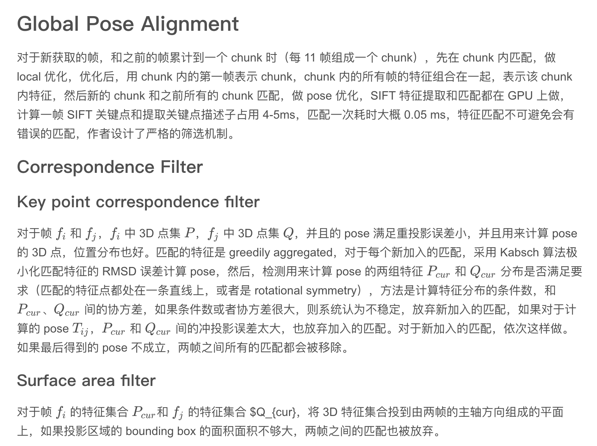
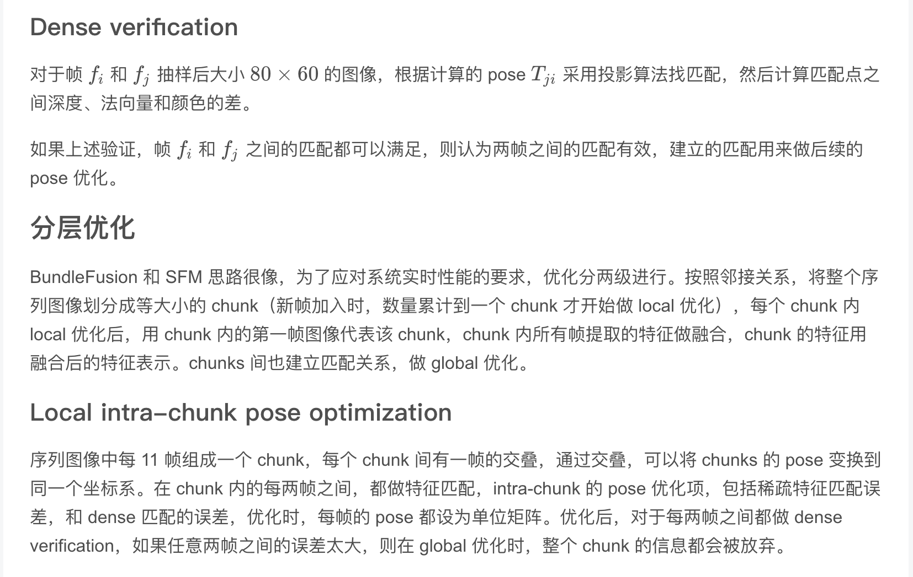
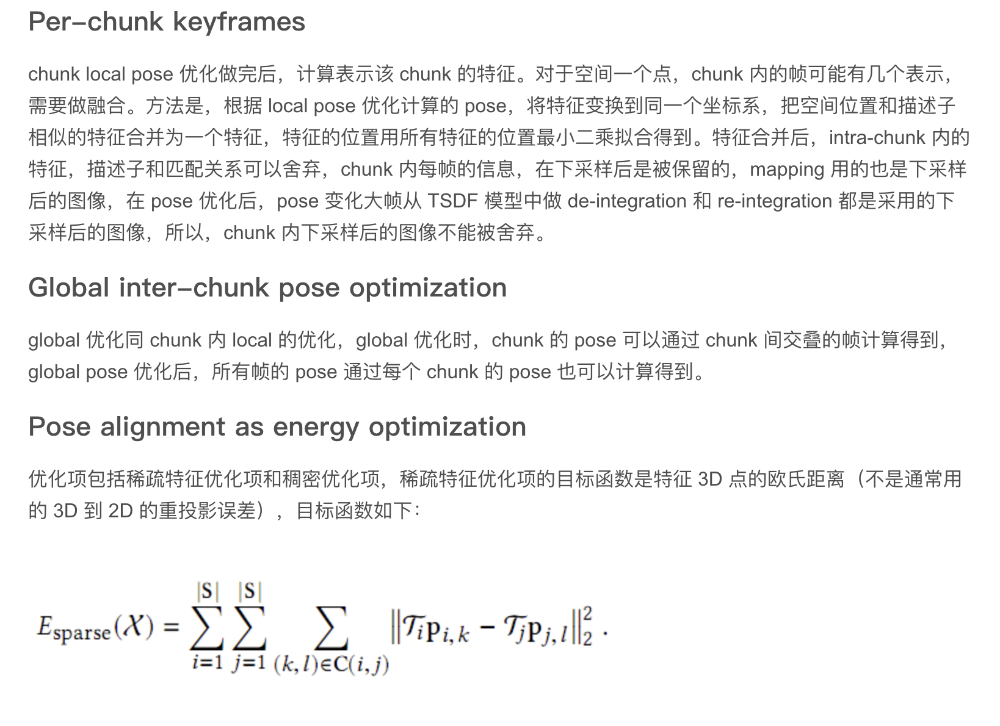
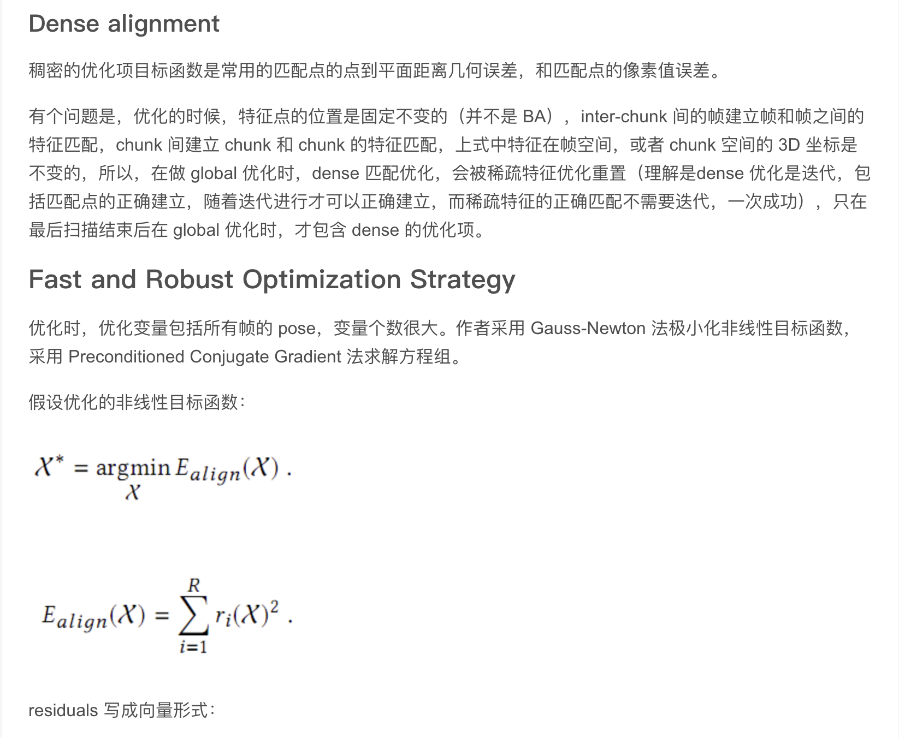
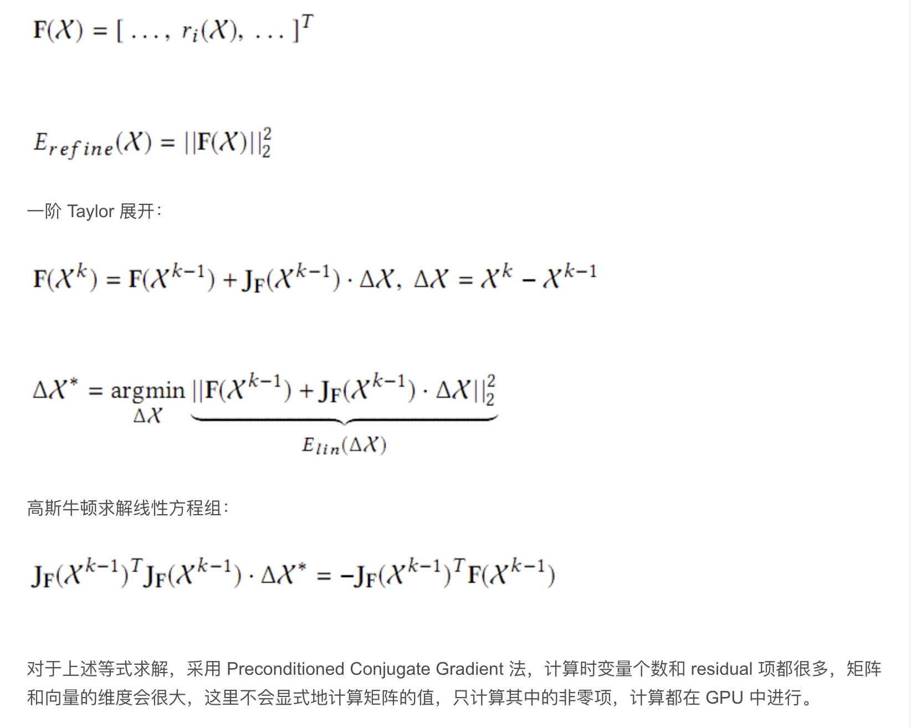
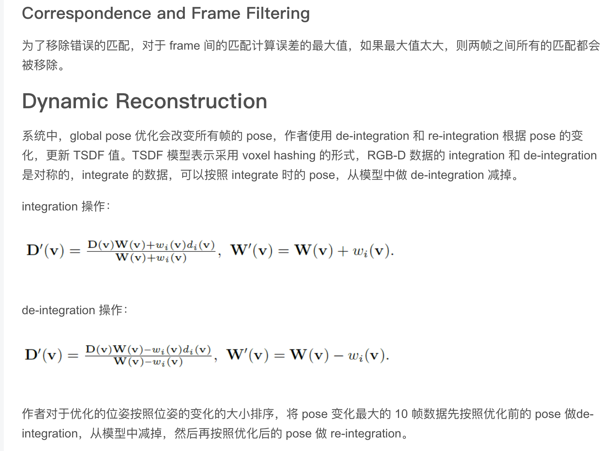
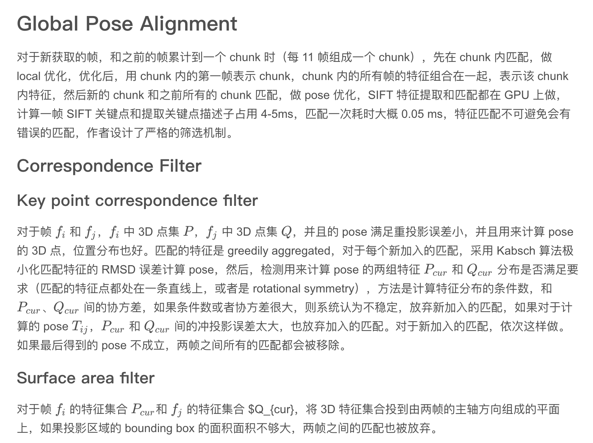
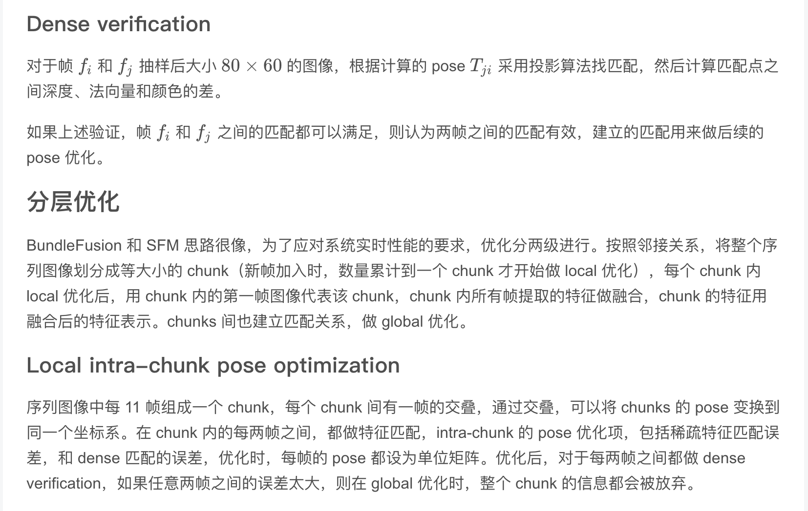
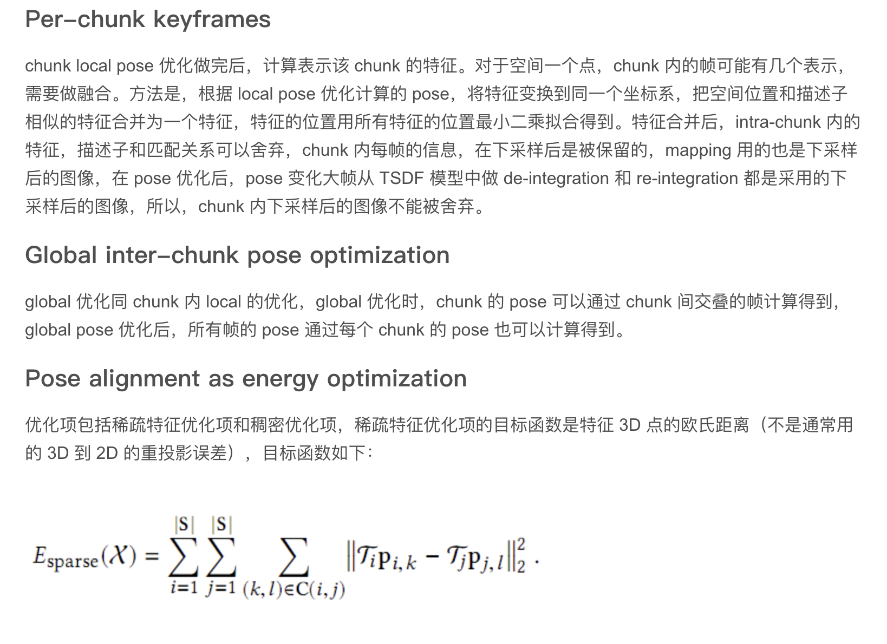
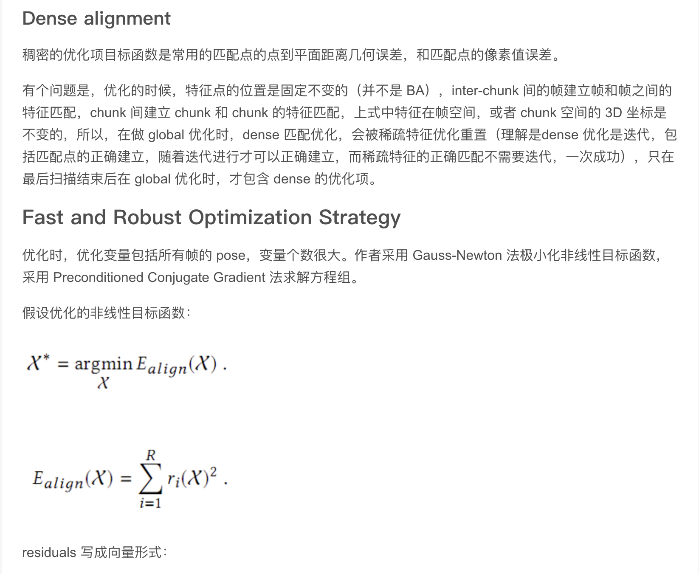
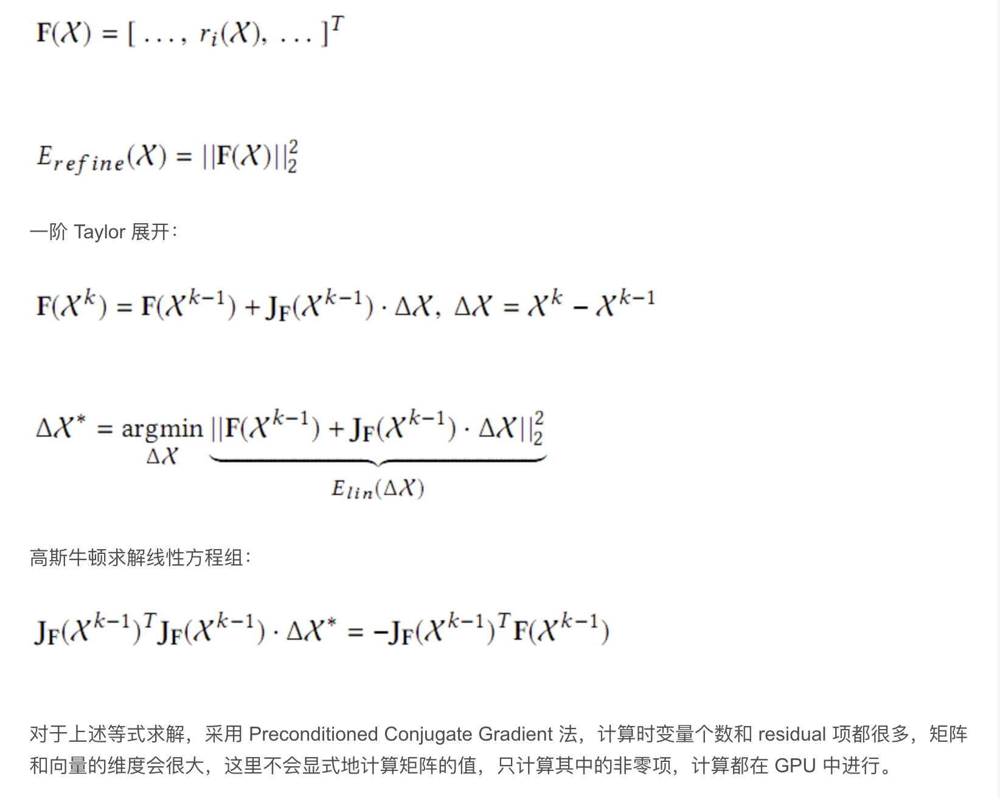
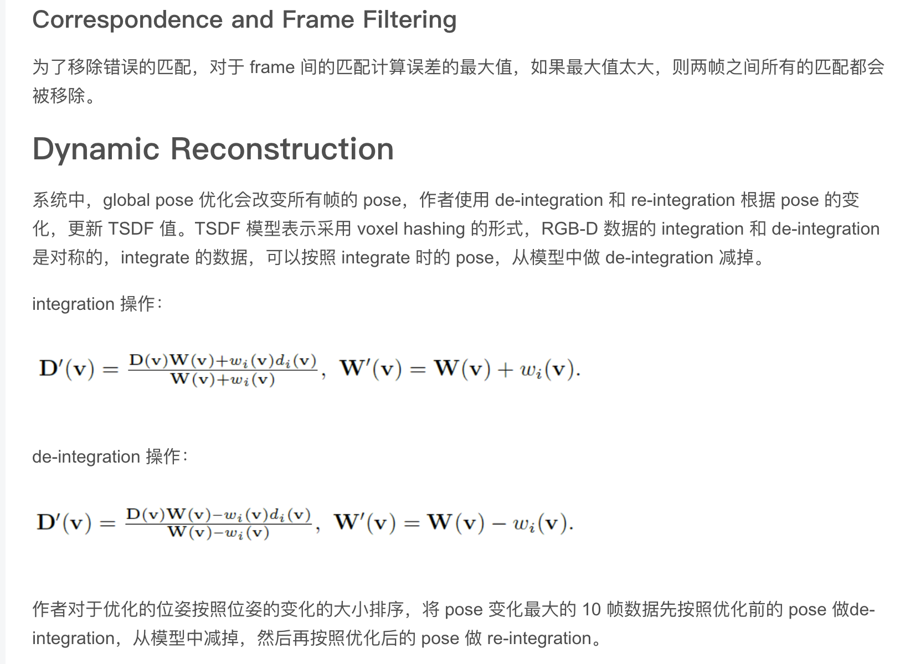
https://blog.csdn.net/fuxingyin/article/details/52921958
https://blog.csdn.net/cc13949459188/article/details/103614402
http://www.cxyzjd.com/article/qq_41318333/109672102
http://www.cxyzjd.com/article/weixin_38636815/107295092
http://www.cxyzjd.com/article/weixin_38636815/107838359
http://www.cxyzjd.com/article/weixin_38636815/107694846
http://www.cxyzjd.com/article/u014660846/108438052
http://www.cxyzjd.com/article/fuxingyin/52921958
https://zhuanlan.zhihu.com/p/86718461